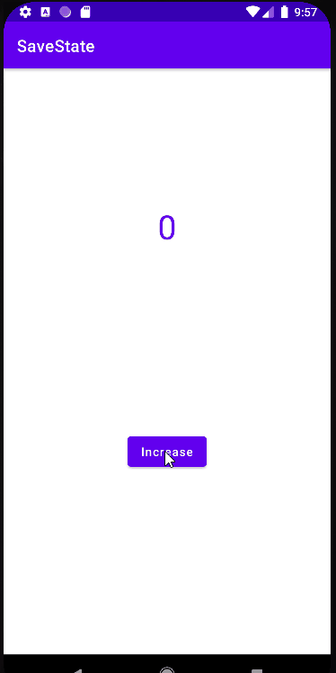

In this section, we’ll be discussing the two vital methods for managing the state of the application, namely onSaveInstanceState
and onRestoreInstanceState.
We’ll be developing a Counter Android Application in which we’ll handle the state of the application when the configuration changes.
So, let's get started.
Creating the App
Create an App called SaveState from empty activity which contains only a TextView
and a Button
Now we go with the code of the MainActivity.kt. It will simply have a listener so that when the
button is pressed, the counter increases by 1. For this we will have a global variable counter that we will initialize to 0
and that we will increase each time we press the button. It's an easy app but it serves us for that example.
MainActivity.kt
import androidx.appcompat.app.AppCompatActivity
import android.os.Bundle
import android.widget.Button
import android.widget.TextView
class MainActivity : AppCompatActivity() {
private var counter = 0
private val tvCounter: TextView by lazy { findViewById(R.id.tvCounter) }
private val btnInc: Button by lazy { findViewById(R.id.btnInc) }
override fun onCreate(savedInstanceState: Bundle?) {
super.onCreate(savedInstanceState)
setContentView(R.layout.activity_main)
btnInc.setOnClickListener {
increaseCounter()
}
updateTvCounter()
}
private fun increaseCounter() {
counter++
updateTvCounter()
}
private fun updateTvCounter() {
tvCounter.text = counter.toString()
}
}
 Running App
The app works as expected. But what if we turn over the mobile phone to landscape position
Running App
As we can see, the counter value is set to 0 again. This is because when we turn the mobile, the activity is created again, starting the counter at 0.
Let's add a Log to check that in the MainActitity
private fun log(text:String){
Log.d(TAG, text )
}
And remember create the TAG
import ......
const val TAG ="SAVE_STATE_TAG"
class MainActivity : AppCompatActivity() { .....
Now every time we enter the onCreate we execute the log function
override fun onCreate(savedInstanceState: Bundle?) {
super.onCreate(savedInstanceState)
setContentView(R.layout.activity_main)
log("onCreate Method")
.............
Launch the App and let's see
onCreate is called two times
onSaveInstanceState and onRestorenIstanceState
onSaveInstanceState allows us to save data after the activity stops.
onRestorenIstanceState allows us to retrieve previously stored data
To see when each of these methods are executed we are going to override them and call our log function, in addition we will also include the
onResume function on the MainActivity.kt
override fun onResume() {
super.onResume()
log("We are onResume")
}
override fun onSaveInstanceState(outState:Bundle){
super.onSaveInstanceState(outState)
log("We are onSaveInstanceState")
}
override fun onRestoreInstanceState(savedInstanceState: Bundle) {
super.onRestoreInstanceState(savedInstanceState)
log("We are onRestoreInstanceState")
}
If we launch the application and later turn the mobile, the result of the log will be as follows.
//App is recently launched
com.cartatar.savestate D/SAVE_STATE_TAG: onCreate Method
com.cartatar.savestate D/SAVE_STATE_TAG: We are onResume
//Here we rotate the mobile
com.cartatar.savestate D/SAVE_STATE_TAG: We are onSaveInstanceState
com.cartatar.savestate D/SAVE_STATE_TAG: onCreate Method
com.cartatar.savestate D/SAVE_STATE_TAG: We are onRestoreInstanceState
com.cartatar.savestate D/SAVE_STATE_TAG: We are onResume
Saving and Restoring the State
Now, we are using the Bundle to save our data so we can retrieve it later.
We simply have to add our counter to the Bundle so that we can later retrieve it.
Remember to use the same Key to retrieve it, the best option is to create a constant.
MainActivity.kt
import androidx.appcompat.app.AppCompatActivity
import android.os.Bundle
import android.util.Log
import android.widget.Button
import android.widget.TextView
const val TAG ="SAVE_STATE_TAG"
const val COUNTER_KEY = "COUNTER_KEY"
class MainActivity : AppCompatActivity() {
private var counter = 0
private val tvCounter: TextView by lazy { findViewById(R.id.tvCounter) }
private val btnInc: Button by lazy { findViewById(R.id.btnInc) }
override fun onCreate(savedInstanceState: Bundle?) {
super.onCreate(savedInstanceState)
setContentView(R.layout.activity_main)
log("onCreate Method")
btnInc.setOnClickListener {
increaseCounter()
}
}
private fun increaseCounter() {
counter++
updateTvCounter()
}
private fun updateTvCounter() {
tvCounter.text = counter.toString()
}
private fun log(text:String){
Log.d(TAG, text )
}
override fun onResume() {
super.onResume()
log("We are onResume")
updateTvCounter()
}
override fun onSaveInstanceState(outState:Bundle){
super.onSaveInstanceState(outState)
log("We are onSaveInstanceState")
outState.putInt(COUNTER_KEY,counter)
}
override fun onRestoreInstanceState(savedInstanceState: Bundle) {
super.onRestoreInstanceState(savedInstanceState)
log("We are onRestoreInstanceState")
counter = savedInstanceState.getInt(COUNTER_KEY)
}
}
Notice that we've moved the updateTvCounter() method from onCreate to onResume
Save State Working ok EditText save its sate internally so you don't have to implement anything for them.
For more complex Apps, it is better to use ViewModel pattern.
Android uses a file system that's similar to disk-based file systems on other platforms. The system provides several options for you to save your app data:
App-specific storage : Store files that are meant for your app's use only, either in dedicated directories within an
internal storage volume or different dedicated directories within external storage.
Use the directories within internal storage to save sensitive information that other apps shouldn't access.
Shared storage: Store files that your app intends to share with other apps, including media, documents, and other files.
Preferences: Store private, primitive data in key-value pairs.
Databases: Store structured data in a private database using the Room persistence library.
The characteristics of these options are summarized in the following table:
The solution you choose depends on your specific needs:
How much space does your data require?
Internal storage has limited space for app-specific data. Use other types of storage if you need to save a substantial amount of data.
How reliable does data access need to be?
If your app's basic functionality requires certain data, such as when your app is starting up, place the data within internal storage directory or a database. App-specific files that are stored in external storage aren't always accessible because some devices allow users to remove a physical device that corresponds to external storage.
What kind of data do you need to store?
If you have data that's only meaningful for your app, use app-specific storage. For shareable media content, use shared storage so that other apps can access the content.
For structured data, use either preferences (for key-value data) or a database (for data that contains more than 2 columns).
Should the data be private to your app?
When storing sensitive data—data that shouldn't be accessible from any other app—use internal storage, preferences, or a database.
Internal storage has the added benefit of the data being hidden from users.
Access app-specific files
In many cases, your app creates files that other apps don't need to access, or shouldn't access. The system provides the following locations for storing such app-specific files:
Internal storage directories: These directories include both a dedicated location for storing persistent files,
and another location for storing cache data. The system prevents other apps from accessing these locations, and on Android 10 (API level 29)
and higher, these locations are encrypted. These characteristics make these locations a good place to store sensitive data that only your app itself can access.
External storage directories : These directories include both a dedicated location for storing persistent files, and another
location for storing cache data. Although it's possible for another app to access these directories if that app has the proper permissions,
the files stored in these directories are meant for use only by your app. If you specifically intend to create files that other apps should be able to access,
your app should store these files in the shared storage part of external storage instead.
When the user uninstalls your app, the files saved in app-specific storage are removed. Because of this behavior, you shouldn't use this storage to save anything that
the user expects to persist independently of your app. For example, if your app allows users to capture photos, the user would expect that they can access those
photos even after they uninstall your app. So you should instead use shared storage to save those types of files to the appropriate media collection.
Access from internal storage
For each app, the system provides directories within internal storage where an app can organize its files. One directory is designed for your app's persistent files,
and another contains your app's cached files. Your app doesn't require any system permissions to read and write to files in these directories.
Other apps cannot access files stored within internal storage. This makes internal storage a good place for app data that other apps shouldn't access.
Keep in mind, however, that these directories tend to be small. Before writing app-specific files to internal storage, your app should query the free space
on the device.
This snippet allows us to know how much free space on the device
// App needs 10 MB within internal storage.
const val NUM_BYTES_NEEDED_FOR_MY_APP = 1024 * 1024 * 10L;
val storageManager = applicationContext.getSystemService<StorageManager>()!!
val appSpecificInternalDirUuid: UUID = storageManager.getUuidForPath(filesDir)
val availableBytes: Long =
storageManager.getAllocatableBytes(appSpecificInternalDirUuid)
if (availableBytes >= NUM_BYTES_NEEDED_FOR_MY_APP) {
storageManager.allocateBytes(
appSpecificInternalDirUuid, NUM_BYTES_NEEDED_FOR_MY_APP)
} else {
val storageIntent = Intent().apply {
// To request that the user remove all app cache files instead, set
// "action" to ACTION_CLEAR_APP_CACHE.
action = ACTION_MANAGE_STORAGE
}
}
Access persistent files
Your app's ordinary, persistent files reside in a directory that you can access using the filesDir property of a context
object. The framework provides several methods to help you access and store files in this directory.
You can use the File API to access and store files.
To help maintain your app's performance, don't open and close the same file multiple times .
The following code snippet demonstrates how to use the File API:
val file = File(context.filesDir, filename)
Store a file using a stream
As an alternative to using the File API, you can call openFileOutput() to get a
FileOutputStream that writes to a file within the filesDir directory.
The following code snippet shows how to write some text to a file:
val filename = "myfile"
val fileContents = "Hello world!"
context.openFileOutput(filename, Context.MODE_PRIVATE).use {
it.write(fileContents.toByteArray())
}
Caution: On devices that run Android 7.0 (API level 24) or higher, unless you pass the Context.MODE_PRIVATE
file mode into openFileOutput() , a SecurityException occurs .
To allow other apps to access files stored in this directory within internal storage, use a FileProvider
with the FLAG_GRANT_READ_URI_PERMISSION attribute.
You can get an array containing the names of all files within the filesDir directory by calling fileList(),
as shown in the following code snippet:
var files: Array = context.fileList()
Create nested directories
You can also create nested directories, or open an inner directory, by calling getDir():
context.getDir(dirName, Context.MODE_PRIVATE)
Note: filesDir is always an ancestor directory of this new directory.
Create cache files
f you need to store sensitive data only temporarily, you should use the app's designated cache directory within internal storage to save the data.
As is the case for all app-specific storage, the files stored in this directory are removed when the user uninstalls your app, although the files in this directory
might be removed sooner.
To create a cached file, call File.createTempFile() :
Your app accesses a file in this directory using the cacheDir property of a context object and the File API:
val cacheFile = File(context.cacheDir, filename)
Remove cache files
Even though Android sometimes deletes cache files on its own, you shouldn't rely on the system to clean up these files for you.
You should always maintain your app's cache files within internal storage.
To remove a file from the cache directory within internal storage, use one of the following methods:
The delete() method on a File object that represents the file:
cacheFile.delete()
The deleteFile() method of the app's context, passing in the name of the file:
context.deleteFile(cacheFileName)
Access from external storage
If internal storage doesn't provide enough space to store app-specific files, consider using external storage instead.
The system provides directories within external storage where an app can organize files that provide value to the user only within your app.
One directory is designed for your app's persistent files, and another contains your app's cached files
On Android 4.4 (API level 19) or higher, your app doesn't need to request any storage-related permissions to access app-specific
directories within external storage. The files stored in these directories are removed when your app is uninstalled.
Caution : The files in these directories aren't guaranteed to be accessible, such as when a removable
SD card is taken out of the device. If your app's functionality depends on these files, you should instead store the files within internal storage.
On devices that run Android 9 (API level 28) or lower , your app can access the app-specific files that belong to other apps,
provided that your app has the appropriate storage permissions. To give users more control over their files and to limit file clutter,
apps that target Android 10 (API level 29) and higher are given scoped access into external storage, or scoped storage, by default.
When scoped storage is enabled, apps cannot access the app-specific directories that belong to other apps.
Verify that storage is available
Because external storage resides on a physical volume that the user might be able to remove, verify that the volume is accessible before trying
to read app-specific data from, or write app-specific data to, external storage .
You can query the volume's state by calling Environment.getExternalStorageState() . If the returned state is MEDIA_MOUNTED,
then you can read and write app-specific files within external storage. If it's MEDIA_MOUNTED_READ_ONLY , you can only read these files.
For example, the following methods are useful to determine the storage availability:
// Checks if a volume containing external storage is available
// for read and write.
fun isExternalStorageWritable(): Boolean {
return Environment.getExternalStorageState() == Environment.MEDIA_MOUNTED
}
// Checks if a volume containing external storage is available to at least read.
fun isExternalStorageReadable(): Boolean {
return Environment.getExternalStorageState() in
setOf(Environment.MEDIA_MOUNTED, Environment.MEDIA_MOUNTED_READ_ONLY)
}
Select a physical storage location
Sometimes, a device that allocates a partition of its internal memory as external storage also provides an SD card slot. This means that the device has multiple physical volumes
that could contain external storage, so you need to select which one to use for your app-specific storage.
To access the different locations, call ContextCompat.getExternalFilesDirs() . As shown in the code snippet, the first element
in the returned array is considered the primary external storage volume. Use this volume unless it's full or unavailable.
val externalStorageVolumes: Array =
ContextCompat.getExternalFilesDirs(applicationContext, null)
val primaryExternalStorage = externalStorageVolumes[0]
Access persistent files
To access app-specific files from external storage, call getExternalFilesDir().
To help maintain your app's performance, don't open and close the same file multiple times.
The following code snippet demonstrates how to call getExternalFilesDir():
val appSpecificExternalDir = File(context.getExternalFilesDir(null), filename)
On Android 11 (API level 30) and higher, apps cannot create their own app-specific directory on external storage.
Create cache files
To add an app-specific file to the cache within external storage, get a reference to the externalCacheDir:
val externalCacheFile = File(context.externalCacheDir, filename)
Remove cache files
To remove a file from the external cache directory, use the delete() method on a File object that represents the file
externalCacheFile.delete()
Media content
If your app works with media files that provide value to the user only within your app, it's best to store them in app-specific directories within external storage,
as demonstrated in the following code snippet:
fun getAppSpecificAlbumStorageDir(context: Context, albumName: String): File? {
// Get the pictures directory that's inside the app-specific directory on
// external storage.
val file = File(context.getExternalFilesDir(
Environment.DIRECTORY_PICTURES), albumName)
if (!file?.mkdirs()) {
Log.e(LOG_TAG, "Directory not created")
}
return file
}
It's important that you use directory names provided by API constants like DIRECTORY_PICTURES. These directory names ensure that the files
are treated properly by the system. If none of the pre-defined sub-directory names suit your files, you can instead pass null
into getExternalFilesDir() . This returns the root app-specific directory within external storage.